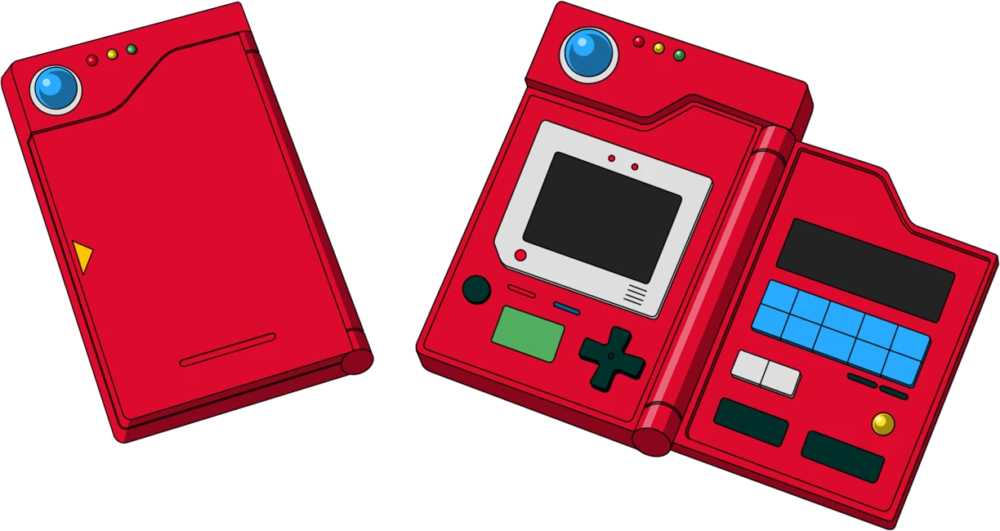

Pokedex da 3ºgen
A Pokédex da terceira geração nos remakes Pokémon Omega Ruby e Alpha Sapphire foi modernizada em relação aos jogos originais de Game Boy Advance. Ela continua funcionando como uma enciclopédia digital que registra informações sobre os Pokémon encontrados na região de Hoenn, mostrando dados como tipo, habilidades e características de cada criatura. A interface foi melhorada, facilitando a visualização e o acompanhamento do progresso do jogador. Completar a Pokédex regional se torna um objetivo importante, incentivando a exploração de diferentes áreas do jogo para encontrar Pokémon raros. Essa mecânica aumenta a sensação de progresso e motiva o jogador a capturar o maior número possível de espécies durante a aventura.
